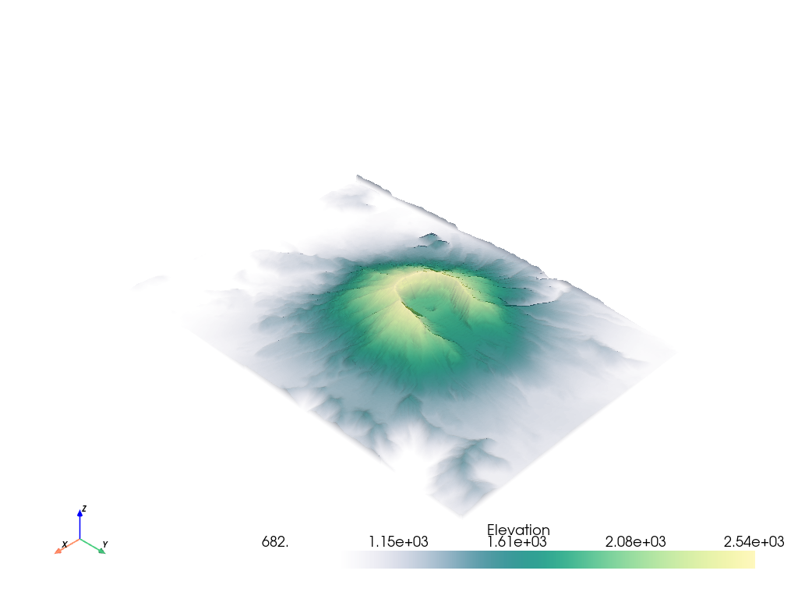

注釈
Go to the end to download the full example code
不透明度を指定してプロット#
不透明度伝達関数またはスカラー配列に基づく不透明度マッピングを使用して，メッシュのスカラー配列をプロットします．
import pyvista as pv
from pyvista import examples
# Load St Helens DEM and warp the topography
image = examples.download_st_helens()
mesh = image.warp_by_scalar()
グローバル値#
また，0から1の範囲で1つのfloat値を渡すことにより，グローバル不透明度値をメッシュに適用し，メッシュの背後にあるオブジェクトを表示することもできます．
p = pv.Plotter()
p.add_mesh(
image.contour(),
line_width=5,
)
p.add_mesh(mesh, opacity=0.85, color=True)
p.show()
次の例では， use_transparency=True を指定して不透明度を透明度に変換できます．
転送機能#
プロットされた任意のスカラー配列に不透明度マッピングを適用することができます．単一の静的な値を指定してすべてのセルでメッシュを透明にするか，またはプロットされたスカラー配列が不透明度にマップされる伝達関数を使用できます．いくつかの伝達関数があらかじめ定義されています．
不透明度転送関数は次のとおりです．
'linear': プロットされたスカラー範囲の不透明度を低い値から高い値まで直線的に変化 (増加) させます'linear_r': プロットされたスカラー範囲全体の不透明度を高い値から低い値まで直線的に変化 (増加) させる'geom': 対数スケールで，プロットされたスカラー範囲全体の不透明度を低から高まで変化 (増加) させます'geom_r': 対数スケールで，プロットされたスカラー範囲全体の不透明度を高から低まで変化 (増加) させます'sigmoid': S字曲線上の不透明度を低い値から高い値までプロットされたスカラー範囲にわたって変化させる (増加させる)'sigmoid_r': S字曲線上の不透明度を，プロットされたスカラー範囲の高低で変化 (増加) させる
# Show the linear opacity transfer function
mesh.plot(opacity="linear")
# Show the sigmoid opacity transfer function
mesh.plot(opacity="sigmoid")
また，プロットされたスカラー配列に線形にマップされる独自の伝達関数を使用することもできます．たとえば，次のように不透明度マッピングを作成できます．
opacity = [0, 0.2, 0.9, 0.6, 0.3]
上記のように最小化された不透明度マッピングが与えられると，PyVistaはスカラーをマッピングするときに表示される色の数の範囲にわたって不透明度マッピングを補間します． scipy が利用可能なら，2次補間が使用されます-そうでなければ，単純な線形補間が使用されます．不透明度伝達関数がどのようなものか知りたいですか?次のようにして取得できます．
# Have PyVista interpolate the transfer function
tf = pv.opacity_transfer_function(opacity, 256).astype(float) / 255.0
import matplotlib.pyplot as plt
plt.plot(tf)
plt.title('My Interpolated Opacity Transfer Function')
plt.ylabel('Opacity')
plt.xlabel('Index along scalar mapping')
plt.show()
不透明度マッピングの不透明度は，最小スカラー範囲で0.0，値はスカラー範囲の中央で0.9，値はスカラー範囲の最大で0.3になります．
不透明度マッピングは， DICOM画像をプロットするときにしばしば有用である．たとえば，サンプルのknee DICOMイメージをダウンロードします．
knee = examples.download_knee()
ここでは，いくつかの異なる不透明度マッピングを使用してDICOM画像を検査します．
p = pv.Plotter(shape=(2, 2), border=False)
p.add_mesh(knee, cmap="bone", scalar_bar_args={'title': "No Opacity"})
p.view_xy()
p.subplot(0, 1)
p.add_mesh(knee, cmap="bone", opacity="linear", scalar_bar_args={'title': "Linear Opacity"})
p.view_xy()
p.subplot(1, 0)
p.add_mesh(knee, cmap="bone", opacity="sigmoid", scalar_bar_args={'title': "Sigmoidal Opacity"})
p.view_xy()
p.subplot(1, 1)
p.add_mesh(knee, cmap="bone", opacity="geom_r", scalar_bar_args={'title': "Log Scale Opacity"})
p.view_xy()
p.show()
配列による不透明度#
メッシュに関連付けられたスカラー配列を使用して，スカラーフィールドから得られた独自の不透明度/透明度値を各セルに与えることもできます．たとえば，モデリング結果の不確実性配列を使用して，不確実性のあるメッシュ領域を非表示にし，適切に解決された領域をハイライト表示することができます．
次に，カラー値を使用してメッシュをプロットし，2番目の配列を使用してメッシュの透明度を制御する例を示します．
model = examples.download_model_with_variance()
contours = model.contour(10, scalars='Temperature')
contours.array_names
['Temperature', 'Temperature_var']
分散の大きい領域に高い透明度を持たせたいので，必ず use_transparency=True にフラグを立ててください．
Also, since the opacity array must be between 0 and 1, we normalize the temperature variance array by the maximum value. That way high variance will be completely transparent.
contours['Temperature_var'] /= contours['Temperature_var'].max()
p = pv.Plotter(shape=(1, 2))
p.subplot(0, 0)
p.add_text('Opacity by Array')
p.add_mesh(
contours.copy(),
scalars='Temperature',
opacity='Temperature_var',
use_transparency=True,
cmap='bwr',
)
p.subplot(0, 1)
p.add_text('No Opacity')
p.add_mesh(contours, scalars='Temperature', cmap='bwr')
p.show()
Total running time of the script: ( 0 minutes 24.829 seconds)